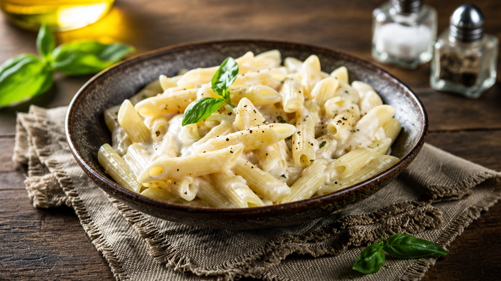

🍝 White Sauce Pasta

White Sauce Pasta is a creamy Italian-inspired dish made with tender pasta coated in a rich, cheesy white sauce. It's simple to prepare, comforting, and perfect for a cozy lunch or dinner.
🥣 Ingredients
- 200 g pasta
- 2 tbsp butter
- 2 tbsp flour
- 2 cups milk
- 1/2 cup grated cheese
- Salt
- Black pepper
- Italian seasoning
- Mixed vegetables (optional)
📋 Recipe Information
⏱ Preparation time
|
🍽 Serves
|
⭐ Difficulty
|
30 mins |
2 people |
Easy |
👨🍳 Instructions
- Boil the pasta according to the package instructions and drain it.
- Melt the butter in a pan over medium heat.
- Stir in the flour and cook for about a minute.
- Gradually add the milk while stirring continuously.
- Add the cheese, salt, black pepper, and Italian seasoning.
- Mix in the cooked pasta and vegetables.
- Cook for another 2 to 3 minutes and serve hot.
💡 Tip
Keep stirring while adding the milk to make the sauce smooth and creamy without lumps.
🍽 Best served with
- Garlic Bread 🥖
- Fresh Salad 🥗
- Lemon Iced Tea 🍋
⬅ Back to Recipe Journal